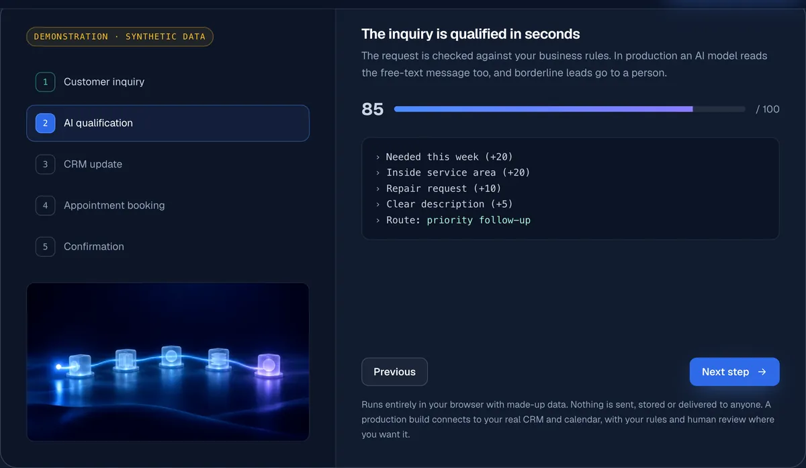
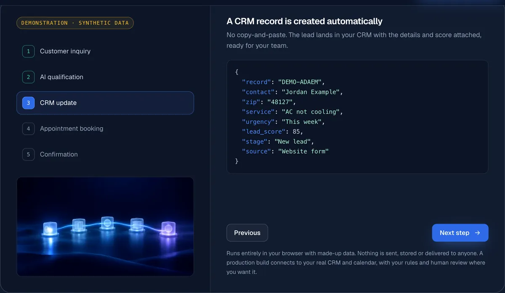
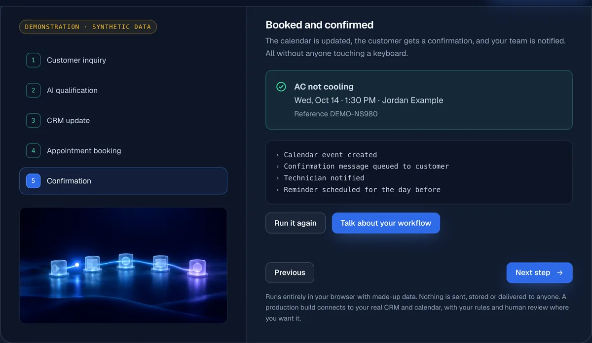

Our Work · Working prototype
Lead automation demo.
An interactive prototype that shows a non-technical business owner what an automated lead workflow actually does, step by step.
The problem
"Automation" is abstract. Business owners are asked to buy something they can't see, and most websites only describe it in general terms.
The proposed solution
A working walk-through that visitors control. They edit a sample service request, then step through what a production workflow would do with it: qualify it, record it, offer appointment times and confirm the booking.
Features & technology
- Five-step flow: inquiry → qualification → CRM record → appointment offer → confirmation
- Transparent, rule-based lead scoring with each factor shown (urgency, service area, job type, detail)
- Generated CRM record and follow-up message from the visitor's own inputs
- Appointment slots computed from the current date, skipping weekends
- Keyboard accessible, screen-reader announcements, reduced-motion support
- Runs entirely in the browser: nothing is sent, stored or delivered
In a client build, the same steps connect to real systems (a CRM, a calendar, email/SMS), with an AI model reading free-text messages and a person reviewing borderline cases.
Demonstration



Verified results
None to report. This is a demonstration prototype, not a deployed client system, so it has no business results.
Project status
Working prototype, live on our homepage. It uses synthetic data only and is not connected to any real CRM, calendar or messaging service.
Picture this with your own tools.
Tell us how leads reach you today and we'll map what an automated version would look like.